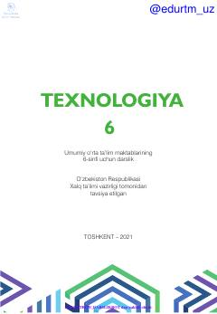

T66-sinf o‘quvchilari uchun texnologiya fanidan o‘quv qo‘llanma va darslik.
Ushbu darslik umumiy o‘rta ta’lim maktablarining 6-sinf o‘quvchilari uchun mo‘ljallangan bo‘lib, zamonaviy texnika, materiallarga ishlov berish texnologiyalari hamda oziq-ovqat va tikuvchilik asoslarini qamrab oladi. Kitobda nazariy bilimlar bilan bir qatorda amaliy mashg‘ulotlar va xavfsizlik qoidalari batafsil yoritilgan.